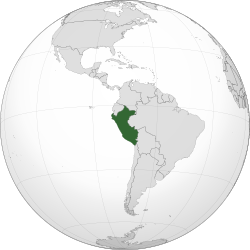

🎭 Cultura
O Peru possui uma das culturas mais antigas da América. O legado do Império Inca está presente em monumentos históricos, artesanato, música, danças e festivais tradicionais.

O Peru está localizado na costa oeste da América do Sul e é conhecido por sua rica herança histórica, pelas civilizações pré-colombianas e pelas paisagens que incluem montanhas, florestas amazônicas e o Oceano Pacífico.
O Peru possui uma das culturas mais antigas da América. O legado do Império Inca está presente em monumentos históricos, artesanato, música, danças e festivais tradicionais.
A culinária peruana é considerada uma das melhores do mundo.
Machu Picchu, construída pelos incas no século XV, é considerada uma das Sete Maravilhas do Mundo Moderno e recebe milhões de visitantes todos os anos.